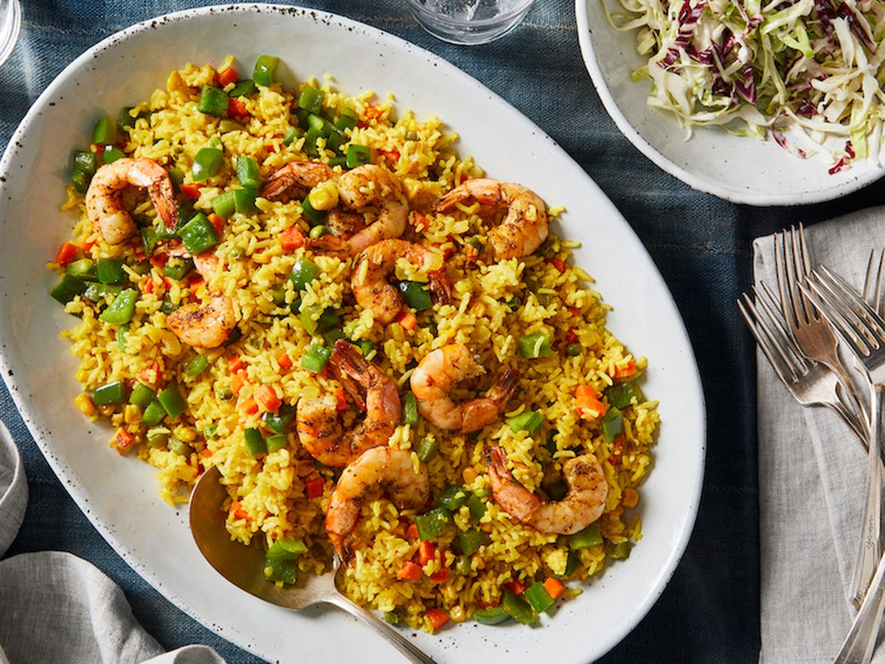
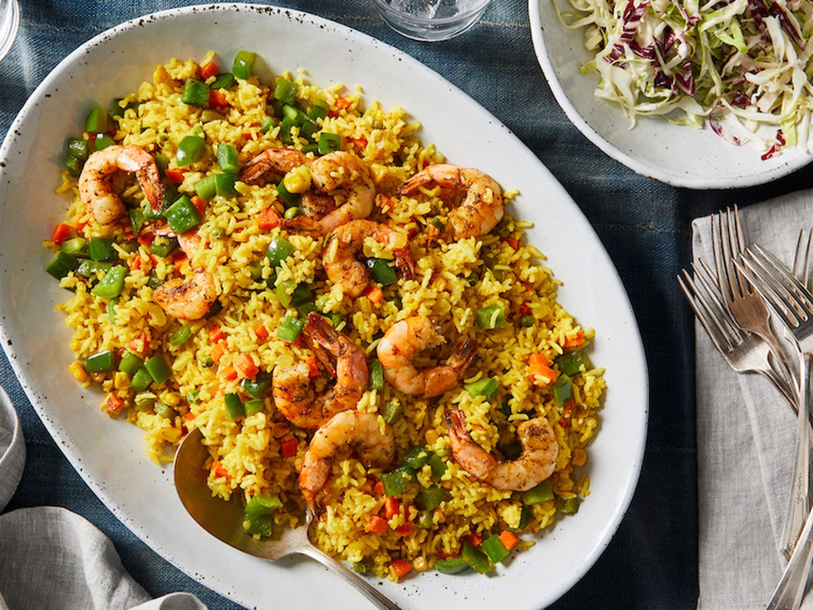

Nigerian Fried Rice
Nigerian Fried Rice! Hmmm! The second most popular rice dish in Nigeria; A must have at parties and a major meal in most homes. It’s tagged “Nigerian Fried Rice” obviously cos there are various recipes out there but the popular African recipe is the Nigerian Fried Rice. Now, there are several methods of cooking Nigerian Fried Rice. Some recipes call for parboiling of the rice and then adding stock and veggies, then cooking till doneness. Others require cooking the rice, adding cooking oil and stock and then fried veggies then cook till desired doneness. These methods are classic and tested, however, I’ve always had my own method which is what I’ll be teaching.
| Ingredients | Measurement |
|---|---|
| raw & washed rice, long grain or basmati | 2 cups |
| Nigerian-style stock | 2 cups |
| onions and carrots, diced (hard veggies)Rice | 1 cups |
| spring onions, bell peppers, sweetcorn, peas, chopped (soft mixed veggies)e | 2 cups |
| Caribbean curry powder (or to taste) | 2 tbs |
| dried thyme (or to taste) | 1 tbs |
| liver, diced and cooked (optional) | 1 cup |
| shrimp or prawn, seasoned and sautéed (optional) | 1 cup |
| green bell pepper, diced | 1 cup |
Method Of Preparation
- Heat 2 tablespoons of oil in a large skillet over medium heat. Add the rice and sauté for 3-5 minutes, until toasted. neque!
- Add 2 cups of stock to the rice, stir and cook on low heat, with the lid on for 12-15 minutes, or till stock is absorbed and rice has softened a bit. Let cool for 5-10 minutes, then fluff and set aside.
- In another pot, heat up the remaining 2 tablespoons oil till hot, then add the hard vegetables. Season with a pinch of salt and stir fry for 2-3 minutes before you add the soft mixed vegetables. Let cook, another 2-3 minutes.
- Season to taste with curry powder, dried thyme, black/white pepper, turmeric powder.
- Add the rice and stir gently, but well, so rice and vegetables combine. Add 1 cup of stock and the coconut milk, cover the pot and cook on low-medium heat for 10-15 minutes or till the rice is al dente.
- Check for doneness and seasoning, and adjust accordingly. Add more stock if required.
- When rice is ready, stir in chopped liver, sautéed shrimp and diced green bell peppers. Cook for 3-5 minutes. Remove from heat and serve.

 
